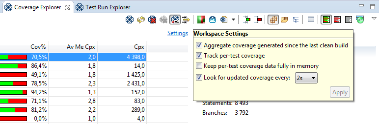
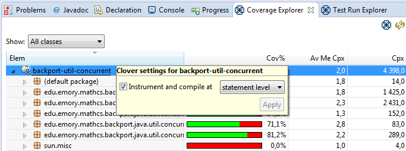

Since every project varies in size and speed, Clover may need to be configured to work best for your project.
Clover-for-Eclipse Memory Allocation
Tracking code coverage for a project, particularly per-test code coverage for large projects can consume a good deal of memory. If things are running too slowly with Clover enabled, consider boosting the memory allocated to your Eclipse installation.
If your workspace contains a lot of projects, we recommend you incrementally enable Clover on them rather than enabling it on all of them at once. Doing it in stages will allow you to determine how many your current memory settings can accommodate.
By default Clover-for-Eclipse will keep its memory usage as low as possible but this may cause code coverage to take a bit longer to be updated after a test run. If you believe you have sufficient memory to load all the per-test coverage data into memory and get faster coverage feedback, consider switching on the 'Keep per-test coverage data in memory' setting, as seen in the following screenshot:

If you use Clover-for-Eclipse purely for Test Optimization purposes and not for coverage reporting, you can reduce the granularity of Clover instrumentation from statement to method level. This will speed up instrumentation times, compilation times and test run times. To make this change, click on a project in the Coverage Explorer and alter its instrumentation level. A full rebuild is required after making this change.
